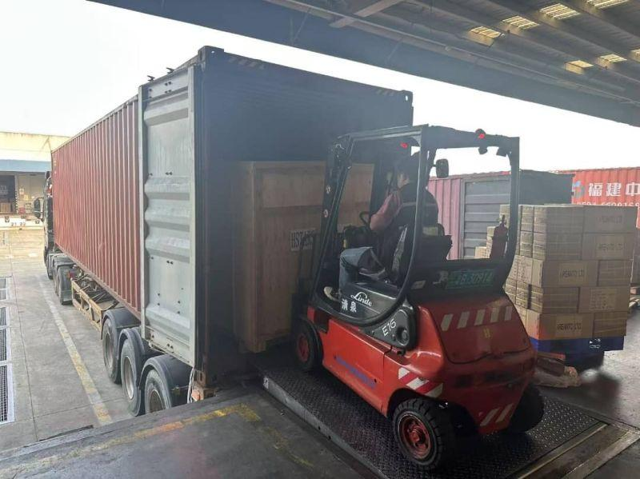

Fire Extinguisher HS Code 8424.10: New vs Used Units, and the GCC Duty You Actually Pay
Most first-time importers price their order on FOB, then get a nasty surprise when the container clears. This guide covers the HS code you should declare, what duty and VAT actually apply in each GCC country, which certificates are mandatory, and how to build a realistic landed cost before you sign the purchase order.

⚠️ Please note: Tariff rates, VAT and certification requirements change. Everything below reflects the general framework at the time of writing and is intended for planning, not as customs advice. Always confirm the current rate and documentary requirements with a licensed customs broker in your destination country before committing to a price.
The HS Code for Fire Extinguishers: 8424.10
Portable and wheeled fire extinguishers sit under HS 8424.10 — fire extinguishers, whether or not charged. Most importers read "whether or not charged" as a note about empty versus filled cylinders and move on. It is that, but it does a second job: the HS has no separate code for second-hand goods. A factory-new 6 kg powder unit and a hydro-tested, re-stamped 2019 cylinder share the same six digits. Condition is declared, not classified — and that single fact drives everything below.
China side: two 10-digit lines, one withdrawn code
China's tariff splits 8424.10.00 into two declaration lines. The old catch-all code 8424100000 has been withdrawn; declarations still filed against it get rejected or queried at the window.
| China code | Description | Export duty | VAT rebate |
|---|---|---|---|
| 8424100010 | Aircraft fire extinguishers | 0% | 13% |
| 8424100090 | Other fire extinguishers, whether or not charged | 0% | 13% |
| 8424100000 | Withdrawn — do not use on new declarations | — | — |
The 13% in that table is a planning number, not a promise. What you actually recover depends on how you acquired the goods and on your own VAT status. For equipment you used yourself and depreciated, China applies a separate refund-or-exemption procedure for used equipment (SAT Announcement 2012 No. 24) rather than the standard rebate — so if your business is buying used cylinders and exporting them, have your accountant confirm the tax treatment before you quote a price. Note also that the 监管条件 (A) and CIQ codes L/M attached to 8424100090 are import-side controls; they do not apply to your export declaration.
GCC side: three 12-digit lines, split by charge — not by condition
Since January 2025 the GCC states declare on the HS-2022-based 12-digit tariff. Under 842410 there are three lines, and it is worth reading what they actually divide on:
| GCC code | Description | What goes here | UAE duty | Saudi duty |
|---|---|---|---|---|
| 842410100000 | Fire extinguishers, not charged | Empty cylinders, valve fitted, no agent | 5% | 15% |
| 842410210000 | Fire extinguishers, charged (Annex 1) | Units charged with a substance on the hazardous-materials list | 5% | 15% |
| 842410290000 | Fire extinguishers, packed with other materials | Units charged with dry powder, foam, CO₂ or water | 5% | 15% |
Two conclusions fall straight out of that table. First, none of the three lines distinguishes new from used: a 2018 refurbished unit charged with ABC powder declares 842410290000 exactly like a factory-new one. Second, the split is about what is inside the cylinder — which is also the split that decides whether you have a dangerous-goods shipment at all. Rates as published in the UAE and ZATCA schedules (source date 1 January 2025): 5% across the board in the UAE, 15% across the board in Saudi Arabia. A published schedule is not a ruling — confirm the line with your broker before you fix a selling price.
Adjacent codes people confuse with 8424.10
| Code | Covers | Typical shipment |
|---|---|---|
| 3813.00 | Preparations and charges for fire extinguishers | Dry powder, foam concentrate in drums or bags |
| 8424.90 | Parts of appliances for projecting liquids or powders | Valves, hoses, nozzles, gauges, brackets |
Avoid the most common classification mistake
Shipping dry powder in drums alongside empty cylinders is not one declaration, it is two. The cylinders go under 8424.10; the powder goes under 3813.00. Declaring powder under the extinguisher code — or the reverse — is a straightforward route to a customs query and a demurrage bill.
New vs Used: Four Things Change, the Six Digits Don't
If the code is identical, what is left to get wrong? More than you would think. Here is the side-by-side for the same 6 kg powder extinguisher, sold new versus sold refurbished:
| Item | New units | Refurbished / used units |
|---|---|---|
| HS 6-digit | 8424.10 | 8424.10 — unchanged |
| China 10-digit | 8424100090 | 8424100090 — unchanged |
| GCC 12-digit | By charge state (see above) | By charge state — not by condition |
| Invoice description | "Fire extinguishers, new, charged" | "Used fire extinguishers, refurbished, hydrostatic test [date], re-stamped [date]" |
| Condition field | New | 旧 / 二手 / X成新 in the goods description, 旧机电产品 in the remarks |
| China VAT rebate | 13%, subject to valid input VAT documents | Used-goods route; normally not the standard 13% rebate |
| Certification | PCoC against the model, SCoC per shipment | Same scheme, but you must supply the test report — schemes are written for new product |
| Dangerous goods | UN 1044 once charged | UN 1044 once charged — condition is irrelevant to the DG rules |
China treats "refurbished" as used, by definition. Under the customs definition of 旧机电产品 (GACC Order 243), goods count as used machinery if they have been used, if they are past their quality guarantee period, if they have deteriorated in storage, if they mix new and old parts — or if they have been refurbished. That definition bites twice. A refurbished extinguisher cannot honestly be invoiced as new. And if the shipment ever comes back to China — a return, a warranty claim, a rejected container — it re-enters as used machinery and goes through the heavier procedure instead of a simple return.
⚠️ The expensive version of this mistake: the invoice says "used, refurbished" and the declaration says "new". Customs sees the mismatch, revalues the goods, and the conformity certificate — issued against a test report for a new product — no longer describes what is in the container. That is a valuation query, a fine and a stranded container in one move.
Which is why the certificate question comes before the price question. Conformity schemes certify a product model, not a condition. Before you order refurbished units, ask whether the model is covered by the exporter's existing PCoC or MoIAT registration. If it is not, you are buying stock you may be unable to clear as certified product, whatever code you put on the form.
GCC Import Duty: What You Will Actually Pay
The six GCC states operate a common external tariff. The standard general rate is 5% ad valorem, calculated on the CIF value — that is, the goods value plus international freight plus insurance, not the FOB price.
| Country | Import duty (general) | VAT / consumption tax | Notes |
|---|---|---|---|
| UAE | 5% | 5% VAT | MoIAT / ECAS conformity required |
| Saudi Arabia | 15% on the 8424.10 lines | 15% VAT | SABER / SCoC required; the 15% rate is the single biggest cost difference vs the UAE |
| Qatar | 5% | No VAT at time of writing | GAC conformity; verify current VAT status |
| Oman | 5% | 5% VAT | DGSM standards approval |
| Bahrain | 5% | 10% VAT | MOICT requirements |
| Kuwait | 5% | No VAT at time of writing | KOWS standards approval |
Saudi Arabia is the one to watch. The Kingdom moved a broad list of goods off the 5% general rate in recent years, and the three fire-extinguisher lines under 842410 now carry 15% in the ZATCA schedule, against 5% in the UAE. That is not a rounding difference — it is the largest single variable in your landed cost, and it is the one most often left out of a quotation built on the GCC "5% rule of thumb".
The 5% vs 15% Gap on One Container — and Whether Routing Helps
Take the container we cost out elsewhere on this site: 2,400 × 6 kg ABC dry powder units, CIF USD 17,345 (goods 14,880 + ocean freight 2,400 + insurance 65). Same goods, same invoice, two destinations:
| Line | Jebel Ali (UAE) | Dammam (KSA) |
|---|---|---|
| CIF value (duty base) | 17,345 | 17,345 |
| Import duty | 5% → 867 | 15% → 2,602 |
| VAT (recoverable if registered) | 5% → 911 | 15% → 2,992 |
| Cash out at clearance | 1,778 | 5,594 |
Duty alone differs by USD 1,735 on a container whose goods are worth 14,880. Because the GCC is a customs union, duty is charged once at the first point of entry into the bloc, and goods then move between member states without a second charge — provided you can prove the duty was paid. A 40ft truck from Jebel Ali to Riyadh runs roughly USD 700–1,000 and 2–4 days, so on paper the UAE-first route still nets roughly USD 735–1,035 per container — before the extra documentation and the risk of a Saudi reassessment.
Three caveats before anyone tries it. The goods must be legally importable in both states — a product that is restricted in Saudi Arabia does not become unrestricted by landing in Dubai. You need the duty-paid evidence in hand, not promised. And a Saudi broker can reassess a suspiciously low transfer price, so the invoice has to be defensible on its own. Ask your broker to quote both routes rather than defaulting to the nearest port.
One thing routing does not change: shipping the cylinders empty saves the dangerous-goods surcharge, but it does not save duty. Both the charged line and the not-charged line sit at 15% in Saudi Arabia and 5% in the UAE. The empty-cylinder trick is a freight decision, not a tariff one.
Is There a Free Trade Agreement? No.
China and the GCC have been in free trade negotiations for many years, but no agreement has entered into force. Practically, that means:
- Chinese-origin fire extinguishers attract the standard general rate.
- A certificate of origin from China does not unlock a preferential rate.
- There is currently no duty advantage to routing the shipment through a third country.
You still need a valid certificate of origin for clearance in most GCC ports — it just serves an identification purpose rather than a tariff-reduction one.
Certification: The Cost Most Importers Forget
Conformity assessment is compulsory and it is billed on top of duty. Budget for it from the start.
Saudi Arabia — SABER
Saudi Arabia requires fire extinguishers to be registered on the SABER platform. There are two separate certificates:
- Product Certificate of Conformity (PCoC) — registered per product, typically valid for one year and reusable across shipments during that period.
- Shipment Certificate of Conformity (SCoC) — issued per shipment, and it must be in hand before the goods arrive at the Saudi port. No SCoC means the container sits.
UAE — MoIAT (formerly ESMA)
Fire extinguishers fall under the UAE's conformity scheme administered by the Ministry of Industry and Advanced Technology. Registration is normally the importer's responsibility, and the units must also satisfy local Civil Defence requirements for the intended installation.
Qatar, Oman, Bahrain, Kuwait
- Qatar — General Authority of Customs conformity certificate.
- Oman — Directorate General of Standards and Metrology approval.
- Bahrain — Ministry of Industry, Commerce and Tourism requirements.
- Kuwait — Kuwait Office of Standards approval.
💡 Pro tip: Certification is charged per shipment or per registration, not per container of goods. Consolidating two or three product lines into one certification application usually costs far less than certifying them separately across two orders.
Documents You Need at the Port
| Document | Issued by | Purpose |
|---|---|---|
| Commercial invoice | Exporter | Value basis for duty and VAT |
| Packing list | Exporter | Per-carton contents, weights, dimensions |
| Bill of lading | Shipping line | Title and release of cargo |
| Certificate of origin | China chamber of commerce / CCPIT | Origin declaration |
| Insurance certificate | Insurer | Required when shipping CIF |
| Conformity certificate | SABER / MoIAT / GAC etc. | Mandatory for customs release |
Also confirm labelling before production, not after. Arabic labelling is required in GCC markets, and re-labelling at destination is slow, expensive and sometimes rejected outright.
Worked Example: Landed Cost of a 1,000-Unit Order
Here is a simple illustration. Assume 1,000 × 6 kg ABC dry powder units, FOB Shanghai, destination Jebel Ali, UAE.
| Item | Amount (USD) |
|---|---|
| Goods, FOB China (1,000 × USD 12.00) | 12,000 |
| International freight | 1,800 |
| Marine insurance | 120 |
| CIF value (duty base) | 13,920 |
| Import duty at 5% of CIF | 696 |
| VAT at 5% of (CIF + duty) | 731 |
| Customs clearance and broker | 250 |
| Terminal handling and inland delivery | 350 |
| Total landed cost | ≈ 15,947 |
| Landed cost per unit | ≈ USD 15.95 |
That is roughly 33% above the FOB unit price — before certification, which for a Saudi shipment would add a further few hundred dollars. Recoverable VAT is a cash-flow item rather than a true cost if you are VAT-registered, but on a first order you still have to fund it.
Mistakes That Cost Real Money
- Declaring the wrong HS code. Mixing up 8424.10 with 3813.00 for agent charges triggers inspection and delay.
- Using the withdrawn 8424100000. China split the line into 8424100010 and 8424100090; declarations against the old code are queried at the window.
- Quoting "new" on a refurbished container. The invoice, the declaration and the conformity certificate then tell three different stories, and customs only needs one of them to stop the container.
- Mismatching the charge state. Declaring 842410100000 (not charged) while shipping charged units, or the reverse, collides with the dangerous-goods documents, which state the opposite.
- Under-declaring value. GCC customs authorities have reference pricing for common products, and the penalty is far larger than the duty saved.
- No SCoC before vessel arrival. This is the single biggest cause of demurrage in Saudi shipments.
- Forgetting VAT in the cash-flow plan. Saudi VAT at 15% on a large container is a significant working-capital hit.
- Labelling after arrival. Re-labeling on the dock is slower and more expensive than doing it in the factory.
- Assuming FOB price equals cost. Build the landed-cost sheet before you quote your own customers a selling price.
Frequently Asked Questions
What is the HS code for fire extinguishers?
Portable and wheeled fire extinguishers are classified under HS heading 8424.10 — fire extinguishers, whether or not charged. In China the 10-digit export lines are 8424100010 (aircraft extinguishers) and 8424100090 (other); the old code 8424100000 has been withdrawn. On the GCC side the 12-digit lines split by charge state: 842410100000 (not charged), 842410210000 (charged, Annex 1) and 842410290000 (charged with other materials). The agent supplied separately is classified under 3813.00, and parts such as valves, hoses and gauges fall under 8424.90.
How much import duty do fire extinguishers attract in GCC countries?
The GCC Common Customs Tariff starts at 5% ad valorem, and the UAE, Qatar, Oman, Bahrain and Kuwait all apply 5% to the three 842410 lines. Saudi Arabia has moved these lines to 15% in the ZATCA tariff schedule, which makes the Kingdom the most expensive GCC market for the same container. Confirm the exact sub-code and rate with a licensed customs broker or on the ZATCA portal before you commit to pricing.
Is there a free trade agreement that removes duty on Chinese fire extinguishers?
No. China and the GCC have held free trade negotiations for many years, but no agreement has entered into force. Fire extinguishers manufactured in China therefore attract the standard GCC rate, and a Chinese certificate of origin does not produce a preferential rate. Always confirm the applicable rate for your specific origin and destination.
What documents are needed to clear a fire extinguisher shipment in the GCC?
A standard set includes the commercial invoice, packing list, bill of lading, certificate of origin, insurance certificate and a conformity certificate for the destination country — a SABER Shipment Certificate of Conformity for Saudi Arabia, MoIAT registration for the UAE, GAC conformity for Qatar, and equivalent approvals for Oman, Bahrain and Kuwait. Labels must normally be in Arabic and English.
Do used or refurbished fire extinguishers have a different HS code?
No. The six-digit code is 8424.10 for new and used units alike, and China's 10-digit export line stays 8424100090. What changes is the declaration, not the classification: the invoice and packing list must describe the goods as used and refurbished, with the hydrostatic test date, and the condition has to match across the invoice, the declaration and the bill of lading. Under China's customs definition of used machinery (GACC Order 243), refurbished goods count as used.
Which GCC code do I declare for empty cylinders versus charged extinguishers?
Empty cylinders go under 842410100000 (fire extinguishers, not charged). Charged units go under 842410210000 if the agent is on the hazardous-materials list, or 842410290000 for dry powder, foam, CO₂ and water. The distinction matters twice — it is the line customs assesses, and it decides whether the shipment is UN 1044 dangerous goods. None of these lines distinguishes new from used.
Why is Saudi duty 15% when the UAE charges 5%?
Saudi Arabia moved a broad list of goods off the 5% GCC general rate, and the three 842410 lines now carry 15% in the ZATCA schedule, while the UAE applies 5% to the same lines. VAT differs too, at 15% versus 5%. Because the GCC is a customs union, duty is paid once at the first point of entry against proof of payment, which is why some importers compare a Jebel Ali entry plus inland trucking against direct entry at Dammam. Confirm both routes with a licensed broker before relying on the difference.
Why is the landed cost much higher than the FOB price?
Because duty and VAT are calculated on the CIF value, which already includes freight and insurance, and then certification, terminal handling, customs broker fees and inland delivery are added on top. Certification alone commonly adds a few hundred US dollars per shipment. For a first order, plan for a landed cost roughly 25–40% above the FOB unit price and refine the estimate once you have real quotes from your forwarder.
Get a Quote With the Documentation You Need
FireGuard Trading exports dry powder, foam, CO₂, water and wet chemical extinguishers from China to importers across the GCC. We supply the full export document set with every shipment — commercial invoice, packing list, certificate of origin, and the technical files your broker or certification body will ask for. Arabic and English labelling is applied in the factory.
Tell us your quantity, destination country and port, and we will reply within 24 hours with FOB or CIF pricing, the HS code we declare, and the certification path for your market.